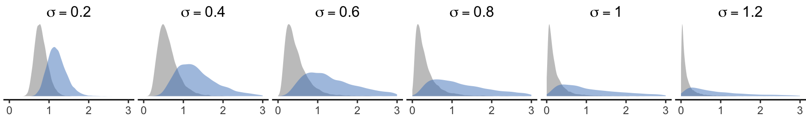

The illusory promise of the Aligned Rank Transform
Appendix I. Additional experimental results
Theophanis Tsandilas ![]()
Géry Casiez
We present complementary results and new experiments that investigate additional scenarios. We also compare INT and RNK with other nonparametric methods. Unless explicitly mentioned in each section, we follow the experimental methodology presented in the main article. At the end of each section, we summarize our conclusions.
1 Results for \(\alpha = .01\)
Although we only presented results for \(\alpha = .05\) in the main article, we observe the same trends for other significance levels. The following figures show the Type I error rates of the methods for the \(4 \times 3\) within-subject design when \(\alpha = .01\). Note that error rates are not proportional to the \(\alpha\) level. For results from other experiments, we refer readers to our raw result files.
Main effects. Figure 1 presents Type I error rates for the main effect of \(X_2\) as the magnitude of the main effect of \(X_1\) increases.
Interaction effects. Figure 2 presents Type I error rates for the interaction effect \(X_1 \times X_2\), when the main effect on \(X_2\) is zero while the main effect on \(X_1\) increases.
Interactions under parallel main effects. We also present results for interaction effects when the two main effects change in parallel. As we explain in the main paper, these results require special attention, as whether positives rates are considered as Type I error rates depends on the way we define the null hypothesis for interactions.
Conclusion
Results for \(\alpha = .01\) are consistent with our results for \(\alpha = .05\).
2 Missing data
We evaluate how missing data affect the performance of the four methods. Specifically, we consider scenarios in which a random sample of \(10\%\), \(20\%\), or \(30\%\) of the observations is missing. Our analysis is restricted to normal distributions and includes two conditions: (i) equal variances and (ii) unequal variances across the levels of the factor to effects are applied (\(X_1\) in our experiments), with the maximum ratio of standard deviations fixed to \(r_{sd}=2\).
Missing observations lead to unbalanced designs, for which Type I hypothesis tests obtained using the aov() function are difficult to interpret. Accordingly, we use LMER and conduct Type III tests (Kuznetsova, Brockhoff, and Christensen 2017), focusing on a \(4 \times 3\) within-subject design and a \(2 \times 4\) mixed design.
We emphasize, however, that our scenarios do not include systematic imbalances arising from missing data concentrated in specific factor levels.
Main effects. Figure 4 presents Type I error rates for the main effect of \(X_2\) as the magnitude of the main effect of \(X_1\) increases. We find that missing data cause ART’s error rates to increase, with a more pronounced effects in the mixed design. This additional inflation compounds the error introduced by unequal variances. In contrast, the accuracy of the three other methods appears largely unaffected.
Interaction effects. We also examine Type I error rates for the interaction effect. In this case, ART’s error rates are not influenced by missing data; the inflated errors observed in the mixed design are due to unequal variances.
Conclusion
ART is sensitive to the presence of missing data. Even under normal distributions, its Type I error rates for main effects increase.
3 Log-normal distributions
We evaluate log-normal distributions across a wider range of \(\sigma\) values (see Figure 6), with particular attention to distributions with smaller variance, which exhibit lower degrees of skewness.

Main effects. Figure 7 presents the Type I error rates for main effects. As expected, ART’s inflation of error rates is less severe when the distributions are closer to normal, whereas the problem becomes more pronounced as skewness increases.
Interaction effects. We observe similar patterns for the Type I error rates of interaction effects in the presence of a single main effect. Notice that PAR’s error rates are highly unstable. They appears inflated under the within-subject design and deflated under other configurations.
Interactions under parallel main effects. We also report results for scenarios in which both main effects increase in parallel. These results again require careful interpretation, as the null hypothesis of interest may differ across methods. Notably, even slight departures from normality (e.g., \(\sigma = 0.2\)) can make the interpretation of interaction effects problematic.
Conclusion
ART’s robustness issues become less severe as log-normal distributions approach normality. However, even when variance is relatively small, Type I error rates can still become unacceptably large.
4 Binomial distributions
We examine a broader range of parameter settings for the binomial distribution. Although we focus on the lower range of the success probability \(p\), we expect analogous results for their symmetric values \(1-p\). Specifically, we test \(p=.05\), \(.1\), and \(.2\), and for each value we consider \(\kappa=5\) and \(10\) Bernoulli trials.
Main effects. The results for main effects are presented in Figure 10. For the within-subject design, we find that ART’s Type I error rates increase as the number of trials decreases and as the probability of success approaches zero, reaching extremely high levels when \(\kappa = 5\) and \(p=.05\). However, trends change across designs. The other methods maintain good control of Type I error rates.
Interaction effects. Figure 11 shows similar patterns for the Type I error rates of interaction effects in the presence of a single main effect. In the within-subject design, however, PAR, RNK, and INT also tend to inflate error rates when \(a_1 > 2\), although to a much smaller extent than ART.
Interactions under parallel main effects. When both main effects exceed a certain magnitude (see Figure 12), positive rates increase rapidilly for all methods. Whether this inflation is due to interpretation issues or to limitations in the robustness of the methods themselves, these results once again demonstrate the severe difficulties associated with testing interactions under such conditions.
Conclusion
ART performs extremely poorly for binomial data, producing very high Type I error rates even when all population effects are null. We also observe that testing interaction effects in the presence of parallel main effects is problematic for all methods.
5 Main effects in the presence of interactions
In all experiments assessing Type I error rates reported in our article, we assumed no interaction effects. However, we also need to understand whether weak or strong interaction effects could affect the sensitivity of the methods in detecting main effects. Unfortunately, the interpretation of main effects may become ambiguous when interactions are present.
Illustrative example
To understand the problem, let us take a dataset from a fictional experiment (within-subject design with \(n = 24\)) that evaluates the performance of two techniques (Tech A and Tech B) under two task difficulty levels (easy vs. hard). Figure 13 visualizes the means for each combination of the levels of the factors, using the original scale of measurements (left) and a logarithmic scale (right). Note that time measurements were drawn from log-normal distributions.
We observe a clear main effect of Difficulty and a strong interaction effect, regardless of the scale. However, the main effect of Technique largely depends on the scale used to present the results. Can we then conclude that Technique A is overall faster than Technique B?
Below, we present the results of the analysis using different methods.
| PAR | LOG | ART | RNK | INT | |
|---|---|---|---|---|---|
| Difficulty | \(7.8 \times 10^{-8}\) | \(4.3 \times 10^{-16}\) | \(8.6 \times 10^{-12}\) | \(2.5 \times 10^{-16}\) | \(1.1 \times 10^{-15}\) |
| Technique | \(.024\) | \(.81\) | \(.00017\) | \(.69\) | \(.69\) |
| Difficulty \(\times\) Technique | \(7.6 \times 10^{-6}\) | \(4.1 \times 10^{-9}\) | \(9.4 \times 10^{-8}\) | \(1.1 \times 10^{-9}\) | \(1.3 \times 10^{-9}\) |
PAR detects a main effect of Technique (\(\alpha = .05\)), as does ART, which yields an even smaller \(p\)-value. In contrast, LOG, RNK, and INT do not find no evidence for such an effect. As with removable interactions, we can speak about removable main effects in this case.
As a general principle, it makes little sense to interpret main effects when crossing patterns emerge due to a strong interaction. In this scenario, the researchers should instead compare techniques within each level of Difficulty. Accordingly, we can conclude that Technique A is slower on easy tasks but faster on hard tasks in this experiment.
Experiment
To better understand how the different methods detect main in the presence of interactions, we conduct a dedicated experiment. We focus on a \(2 \times 2\) within-subject experimental designs and examine perfectly symmetric cross-interactions.
Interaction effect only. We first examine how the interaction effect alone influences the Type I error rate for \(X_1\) (or \(X_2\), since the design is fully symmetric). In this configuration, no interpretation issues arise: the true main effects are null under any reasonable definition of the null hypothesis.
The results are shown in Figure 14. We find that ART is the only method adversely affected under non-normal distributions, with Type I error rates increasing as the magnitude of the interaction effect grows.
Interaction effect combined with main effect. We evaluate the behavior of the methods for the effect of \(X_2\) when a nonzero interaction effect is combined with a main effect on \(X_1\). In this setting, the definition of the null hypothesis is inherently ambiguous, and the results must be interpreted with caution. We therefore report Positives (%) rather than Type I error rates. However, if the null hypothesis is defined as \(a_2 = 0\), these values can be interpreted as Type I error rates.
The results are shown in Figure 15. None of the methods maintain positive rates at nominal levels. ART and PAR perform appropriately under normal distributions, but their rates increase dramatically for all non-normal distributions. In contrast, RNK and INT exhibit decreasing positive rates under continuous distributions, suggesting a loss of sensitivity to small main effects when strong main and interaction effects are present simultaneously. Under discrete distributions, however, both methods show substantial inflation of positive rates.
Conclusion
When strong interaction effects are present, the interpretation of main effects becomes especially problematic, particularly when those interactions co-occur with nonzero main effects. ART may even inflate Type I error rates in scenarios where such interpretation issues would not ordinarily be expected. More generally, these results underscore that main effects should be interpreted with great caution in the presence of strong interactions.
6 ART with median alignment
We evaluate a modified implementation of ART (ART-MED), where we use medians instead of means to align ranks. This approach draws inspiration from results by Salter and Fawcett (1993), showing that median alignment corrects ART’s instable behavior under the Cauchy distribution. We only test the \(4 \times 3\) within-subject design for sample sizes \(n=10\), \(20\), and \(30\). For this experiment, we omit the RNK method and only present results for non-normal distributions.
We emphasize that Salter and Fawcett (1993) only apply mean and median alignment to interactions. Our implementation for main effects is based on the alignment approach of Wobbrock et al. (2011), where we simply replace means by medians — we are not aware of more adapted methods.
Main effects. Our results presented in Figure 16 demonstrate that median alignment (ART-MED) — or at least our implementation of the method — is not appropriate for testing main effects. Although Type I error rates are now lower for certain configurations (e.g., for the Cauchy distribution), they are higher in others.
Interaction effects. In contrast, median alignment performs surprisingly well for interactions, correcting several deficiencies of ART, particularly when main effects are absent or weak. It appears to resolve ART’s issues with discrete distributions and performs very well under the Cauchy distribution.
Despite this improved performance, we do no recommend the method. It continues to struggle with skewed distributions, and its advantages over parametric ANOVA are essentially confined to the Cauchy distribution.
Interactions under parallel main effects. We also examine the behavior of the methods for interactions in the presence of parallel main effects, where interpretation issues warrant particular caution. Once again, median alignment improves ART’s performance across all distributions, with its positive rates now approaching those of PAR.
Conclusion
Using median rather than mean alignment in ART substantially improves the method’s performance for testing interactions across all distributions we examined. Nevertheless, we cannot recommend the approach. ART remains less robust than other rank-based methods, and its advantages over PAR are unclear. Moreover, it is not evident how median alignment should be applied to the testing of main effects — simply using medians within the alignment procedure of Wobbrock et al. (2011) leads to extremely high error rates.
7 Nonparametric tests in single-factor designs
We compare PAR, RNK, and INT to classical nonparametric tests for single-factor designs with both within- and between-subject structures, where the factor has two, three, or four levels. Depending on the design, different nonparametric tests are used. For within-subject designs, we apply the Wilcoxon signed-rank test when the factor has two levels (2 within), and the Friedman test when the factor has three (3 within) or four (4 within) levels. For between-subject designs (2 between, 3 between, and 4 between), we use the Kruskal–Wallis test.
Type I error rates and power. Figure 19 compares the proportion of positive test results as a function of effect magnitude, using the label NON to denote the corresponding nonparametric test. When the true effect is null, this proportion represents the Type I error rate; under non-null effects, it represents statistical power.
For null effects, all nonparametric tests exhibit appropriate Type I error control across all distributions. Under non-null effects, power differences are generally small for between-subject designs (Kruskal–Wallis test) and for within-subject designs with two levels (Wilcoxon signed-rank test). However, we find substantial differences for within-subject designs with three or four levels, where the Friedman test is used. These findings corroborate Conover’s (2012) observation that rank-transformed ANOVA can outperform the Friedman test under certain conditions. Overall, INT emerges as the most powerful method.
Type I error rate under equal and unequal variances. Figure 20 reports positive rates under conditions of equal (\(r_{sd} = 0\)) and unequal variances (\(r_{sd} > 0\)). We focus on normally distributed data and ordinal scales with five and eleven levels. When variances are equal, the positive rate can be interpreted as the Type I error rate. Under unequal variances, interpretation requires caution because the underlying null hypotheses may differ across methods.
For between-subject designs, the Kruskal–Wallis test and RNK produce nearly identical results, as expected, since RNK is a close approximation of the Kruskal–Wallis test (Conover 2012). For within-subject designs, the differences among methods are more pronounced, with RNK generally yielding the highest positive rates among nonparametric approaches. Across ordinal scales with flexible thresholds, all methods produce positive rates exceeding \(5\%\), which is unsurprising given that unequal variances alter the interpretation of effects in these conditions.
Conclusion
We find no substantial advantages in using classical nonparametric tests over RNK or INT. In particular, INT effectively replaces conventional nonparametric tests even in single-factor designs, while offering superior power and broader applicability.
8 ANOVA-type statistic (ATS)
We compare PAR, RNK, and INT to the ANOVA-type statistic (ATS) (Brunner and Puri 2001) for two-factor designs. We use its implementation in the R package nparLD (Noguchi et al. 2012), which does not support between-subject designs. Thus, we only evaluate it for the \(4 \times 3\) within-subject and the \(2 \times 4\) mixed designs. We consider several combinations of effects, which allows us to assess the trade-offs among these methods in greater detail.
Type I error rates: Main effects. Figure 21 and Figure 22 present Type I error rates for the main effects of each factor as the magnitude of the effect on the other factor increases.
Depending on the design and the factor, the three nonparametric methods methods exhibit different patterns, with no clear winner. In some configurations (the main effect of \(X_1\) in the mixed design and the main effect of \(X_2\) in the within-subject design), the error rates of ATS tend to be slightly above \(5\%\). However, unlike the other methods — whose error rates drop well below nominal levels under the Poisson distribution as the effect of \(X_1\) increases — ATS does not appear to be affected in these cases.
Type I error rates: Interactions. Figure 23 Figure 24 presents Type I error rates for the interaction in the presence of a single main effect.
PAR appears to be the most unstable method, substantially inflating error rates in several conditions. ATS performs best for the mixed design, with Type I error rates remaining very close to the nominal \(5%\) level. However, its error rates are somewhat deflated under the within-subject design. In contrast, RNK and INT tend to slightly inflate error rates under the three discrete distributions when \(a_1\) and \(a_2\) become large.
When two parallel main effects are present, ATS and RNK exhibit very similar trends (see Figure 25). INT appears more robust under continuous distributions, but this advantage disappears when the distributions are discrete.
Power: Main effects. We evaluate the power of the four methods and examine how it is affected by the presence of a main effect on the other factor. As shown in Figure 26 and Figure 27, INT globally emerges as the most powerful method, while RNK and ATS exhibit very similar patterns. We confirm that the power of PAR is poor under the log-normal distribution, and we further observe that its power also declines under the exponential distribution as the magnitude of the effect on the other factor increases.
Power: Interactions. Figure 28 and Figure 29 show results on power for interactions. INT emerges again as the most powerful method. The power of ATS is particularly low under the within-subject design.
Conclusion
ATS appears to be a viable alternative and can outperform RNK and INT under certain conditions. However, it does not offer consistent or substantial advantages over these methods, which are both simpler to implement and more broadly applicable. Across the scenarios we examined, INT provides the most favorable balance between Type I error control and statistical power.
9 Generalizations of nonparametric tests
Finally, we evaluate the generalizations of nonparametric tests recommended by Lüpsen (2018, 2023) as implemented in his np.anova function (Lüpsen 2021). Specifically, we examine the generalization of the van der Waerden test (VDW) and the generalization of the Kruskal-Wallis and Friedman tests (KWF).
These implementations require random slopes to be included in the error term of the model. Concretely, we use Error(Subject/(X1*X2)) for the two-factor within-subject design and Error(Subject/X2) for the mixed design. We use the same modeling approach for all other methods to ensure comparability.
Type I error rates: Main effects. Figure 30 shows the Type I error rates for the main effect of \(X_2\). While all methods perform well under the within-subject and mixed designs, the error rates of VDW and KWF drop sharply as the effect of \(X_1\) increases under the between-subject design. As shown below, this behavior reflects a severe loss of power for these two methods in these conditions. We omit results for the other factor (\(X_1\) as \(a_2\) increases) as we observe very similar trends.
Type I error rates: Interactions. Figure 31 presents the Type I error rates for the interaction in the presence of a single main effect. Again, the error rates of VDW and KWF decrease rapidly, now in both the between-subject and mixed designs. We also observe inflation of the error rates of RNK and INT for large effects under discrete distributions.
Figure 32 shows the results when both \(a_1\) and \(a_2\) increase. In these settings, all four methods struggle as effect magnitudes grow, though their behavior varies across distributions and experimental designs. Depending on the configuration, the methods either inflate positive rates or deflate them below nominal levels. INT appears to be the most stable method for continuous distributions, but its positive rates increase more rapidly under discrete distributions.
Power: Main effects. We examine how power is affected by increasing the magnitude of the effect on the second factor. As shown in Figure 33 and Figure 34, the power of all methods decreases, but KWF and VDW appear especially problematic under the between-subject design (across all distributions) and the mixed design (for the log-normal and exponential distributions). INT once again emerges as the best-performing method.
Power: Interactions. Figure 35 and Figure 35 show how the power for detecting the interaction effect is affected by the presence of a main effect. We observe that the power of all methods decreases as \(a_1\) or \(a_2\) increase, but this decline is substantially more pronounced for KWF and VDW, particularly in the between-subject and mixed designs.
Conclusion
Our results do not support the conclusions of Lüpsen (2018, 2023). The generalized nonparametric tests have serious limitations. Although they sometimes lead to lower Type I error rates, this behavior is largely due to a substantial loss of statistical power when other effects are present. Consequently, we do not recommend the use of these methods.
References
Brunner, Edgar, and Madan L. Puri. 2001. “Nonparametric Methods in Factorial Designs.” Statistical Papers 42 (1): 1–52. https://doi.org/10.1007/s003620000039.
Conover, W. Jay. 2012. “The Rank Transformation—an Easy and Intuitive Way to Connect Many Nonparametric Methods to Their Parametric Counterparts for Seamless Teaching Introductory Statistics Courses.” WIREs Computational Statistics 4 (5): 432–438. https://doi.org/10.1002/wics.1216.
Kuznetsova, Alexandra, Per B. Brockhoff, and Rune H. B. Christensen. 2017. “lmerTest Package: Tests in Linear Mixed Effects Models.” Journal of Statistical Software 82 (13): 1–26. https://doi.org/10.18637/jss.v082.i13.
Lüpsen, Haiko. 2018. “Comparison of Nonparametric Analysis of Variance Methods: A Vote for van Der Waerden.” Communications in Statistics - Simulation and Computation 47 (9): 2547–2576. https://doi.org/10.1080/03610918.2017.1353613.
Lüpsen, Haiko. 2021. R Code for Nonparametric Procedures. Https://www.uni-koeln.de/~a0032/R, 2021.
Lüpsen, Haiko. 2023. “Generalizations of the Tests by Kruskal-Wallis, Friedman and van Der Waerden for Split-Plot Designs.” Austrian Journal of Statistics 52 (5): 101–130. https://doi.org/10.17713/ajs.v52i5.1545.
Noguchi, Kimihiro, Yulia R. Gel, Edgar Brunner, and Frank Konietschke. 2012. “nparLD: An r Software Package for the Nonparametric Analysis of Longitudinal Data in Factorial Experiments.” Journal of Statistical Software 50 (12): 1–3. https://doi.org/10.18637/jss.v050.i12.
Salter, K. C., and R. F Fawcett. 1993. “The Art Test of Interaction: A Robust and Powerful Rank Test of Interaction in Factorial Models.” Communications in Statistics - Simulation and Computation 22 (1): 137–153. https://doi.org/10.1080/03610919308813085.
Wobbrock, Jacob O., Leah Findlater, Darren Gergle, and James J. Higgins. 2011. “The Aligned Rank Transform for Nonparametric Factorial Analyses Using Only Anova Procedures.” Proceedings of the SIGCHI Conference on Human Factors in Computing Systems (New York, NY, USA), CHI ’11, 2011, 143–146. https://doi.org/10.1145/1978942.1978963.